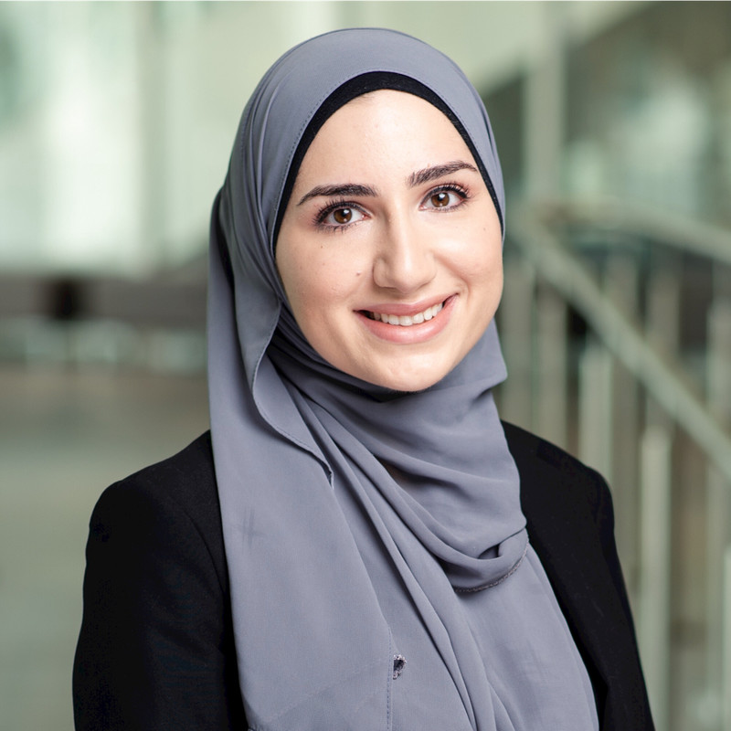
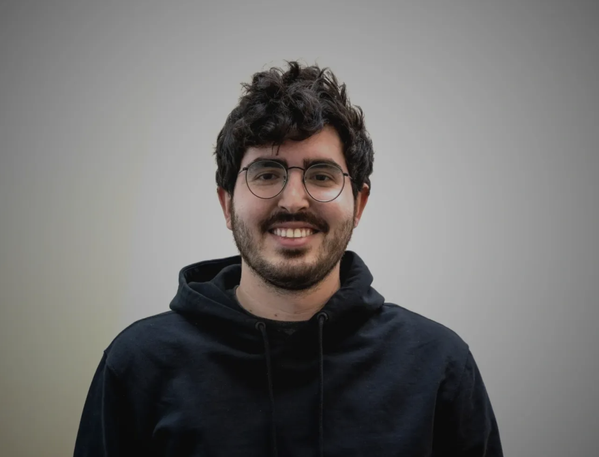

The 2nd Muslims in ML Workshop at NeurIPS 2023
Workshop Schedule
| Time | Event |
|---|---|
| 8:30am - 8:45am | Registration |
| 8:45am - 9:00am | Opening remarks |
| 9:00am - 9:30am | Keynote 1: Lama Ahmad. Red Teaming Generative AI Systems |
| 9:30am - 9:45am | Contributed lightning talks |
| Kumail Alhamoud. Unraveling the Effects of Age-Based Distribution Shifts on Medical Image Classifiers | |
| Razan Baltaji. Muslim-Violence Bias Persists in Debiased GPT Models | |
| Gasser Elbanna. Towards Understanding Speaker Identity Coding in Data-driven Speech Models | |
| 9:45am - 10:05am | Coffee break |
| 10:05am - 10:35am | Keynote 2: Marzyeh Ghassemi. The Pulse of Ethical Machine Learning in Health |
| 10:35am - 11:05am | Keynote 3: Hadi Salman. Adversarial Examples Beyond Security |
| 11:05am - 11:45am | Poster session |
| 11:45am - 12:15pm | Keynote 4: Afra Feyza Akyürek. Editing Language Models with Natural Language Feedback |
| 12:15pm - 1:00pm | Roundtable discussions |
| Table 1: How to deal with biases, stereotypes, and disinformation in ML? | |
| Table 2: Researcher growth and development as an early stage researcher | |
| Table 3: Opportunities for collaboration and building ML communities in Muslim countries | |
| Table 4: Mental health and building a supportive academic culture/community |
Call for Abstracts
We invite submissions of extended abstracts for the Muslims in ML Workshop at NeurIPS 2024. We invite submissions both from authors who self-identify as Muslim (Track 1) and by authors researching topics that address challenges faced by the Muslim community (Track 2). Papers are published in a non-archival format and may have been published in other venues before or may be published in other venues in the future.
Authors of accepted abstracts will be invited to a poster session. Selected abstracts will be additionally invited to give a lighting talk. Talks will follow a hybrid format, with authors having the option to present in person or remotely; however, all posters must be presented in person. Additionally, participants will have the exciting opportunity to present at a joint poster session with all affinity groups at NeurIPS (e.g. Women in ML, Black in AI.). We will recognize outstanding posters with a Best Poster Award.
Submission Link: https://openreview.net/group?id=NeurIPS.cc/2024/Workshop/MusIML
Important Dates
All deadlines are by the end of day, Anywhere On Earth (AoE).
- Call for submission opens: August 18, 2024
- Submissions Deadline:
September 22, 2024October 6, 2024 - Author Notifications:
October 13, 2024October 16, 2024 - NeurIPS Early Registration Deadline: October 21, 2024
- Workshop Date: December 11, 2024
Areas of interest
The Muslims in ML workshop focus on both the potential for advancement and harm to Muslims and those in Muslim-majority countries who religiously identify, culturally associate, or are classified by proximity, as “Muslim”. Track 1 is designed to broadly showcase research by Muslim scholars in ML. Track 2 is designed to highlight work addressing challenges faced by the muslim community. Both tracks aim to promote awareness, collaboration, and mitigation strategies to ensure fair and equitable implementation of AI/ML technologies for Muslims worldwide.
Track 1
Topics related to ML and AI, including but not limited to:
- Applications (e.g., vision, language, speech and audio)
- Deep learning (e.g., architectures, generative models, optimization for deep networks)
- Evaluation (e.g., methodology, meta studies, replicability and validity)
- General machine learning (supervised, unsupervised, online, active, etc.)
- Infrastructure (e.g., libraries, improved implementation and scalability, distributed solutions)
- Machine learning for sciences (e.g. climate, health, life sciences, physics, social sciences)
- Neuroscience and cognitive science (e.g., neural coding, brain-computer interfaces)
- Optimization (e.g., convex and non-convex, stochastic, robust)
- Probabilistic methods (e.g., variational inference, causal inference, Gaussian processes)
- Reinforcement learning (e.g., decision and control, planning, hierarchical RL, robotics)
- Social and economic aspects of machine learning (e.g., fairness, interpretability, human-AI interaction, privacy, safety, strategic behavior)
- Theory (e.g., control theory, learning theory, algorithmic game theory)
Track 2
Topics related to challenges faced by the Muslim community, including but not limited to:
- Algorithmic Bias, including how technology is used to identify ways in which algorithms and models are used to discriminate against Muslim individuals and communities in different contexts, and mitigation strategies.
- Language and Speech, including: bridging gaps in to decrease disparity in Arabic-speaking groups, expanding support for tools using Arabic character sets, accurate transcription and translation for religious texts.
- Data Collection and Representation, including challenges in collecting representative data for muslim communities, collecting data from diverse dialects and vernaculars.
- Leveraging AI for Community Engagement and Outreach, including engaging Muslim youth in AI and ML.
Submission Format and Guidelines
All submissions must be in PDF format. Submissions are limited to two content pages, including all figures and tables. An additional page containing only references is allowed. To prepare your submission, please use the LaTeX style files for NeurIPS 2024: NeurIPS 2024 LaTeX style file.
All submissions must follow NeurIPS Author Guidelines. Submissions must be anonymized, please refrain from including personally identifiable information. Submissions will be reviewed in a double-blind setting.
Accepted Posters
In-person posters
- Gasser Elbanna, Fabio Catania, Satrajit Ghosh. Towards Understanding Speaker Identity Coding in Data-driven Speech Models
- Shabaz Basheer Patel, Mohamed Kane. Building Domain-Specific LLMs Faithful To The Islamic Worldview: Mirage or Technical Possibility?
- Kumail Alhamoud, Yasir Ghunaim, Motasem Alfarra, Philip Torr, Thomas Hartvigsen, Bernard Ghanem, Adel Bibi, Marzyeh Ghassemi. Unraveling the Effects of Age-Based Distribution Shifts on Medical Image Classifiers
- Rian Adam Rajagede, Kholid Haryono, Rochana Hastuti. Qalama: Towards Semantic Autocomplete System for Indonesian Quran
- Babak Hemmatian, Razan Baltaji, Lav Varshney. Muslim-Violence Bias Persists in Debiased GPT Models
Virtual posters
- Azmine Toushik Wasi. Explainable Identification of Hate Speech towards Islam using Graph Neural Networks
- Sofia Bourhim. DGCF: Deep Graph-based Collaborative Filtering recommender system
- Memunat A Ibrahim. Towards Trustworthy Autonomous Ground Vehicles Design in Nigeria
- Toyib Ogunremi, Olubayo Adekanmbi, Anthony Soronnadi, David Akanji. Geosemantic Surveillance And Profiling Of Abduction Locations And Risk Hotspots Using Print Media Reports
- Hadjer Benmeziane, Kaoutar El Maghraoui, Hamza Ouarnoughi, Smail Niar. MED-NAS-Bench: Towards a Multi-task Neural Architecture Search Benchmark for Advancing Medical Imaging Analysis
Keynote Speakers 2023
 |
 |
| Madiha Tahir Unruly Data: On the Archives and Counter-Archives of Drone Warfare |
Lama Ahmad Red Teaming Generative AI Systems |
|  |  |
| Hadi Salman Adversarial Examples Beyond Security |
Afra Feyza Akyürek Editing Language Models with Natural Language Feedback |
Keynote Details
Madiha Tahir
Talk Title: Unruly Data: On the Archives and Counter-Archives of Drone Warfare
Abstract: This talk asks: what can a standpoint situated amidst the smoldering ruins of drone bombardment in a post-colonial village in a post-colonial country teach us about the racial technics of digital war? US drones began bombing the Pakistan-Afghan borderlands in 2004. Over two decades of the war on terror, the weaponized drone has become the emblem of US techno-imperial power. It inspires terror and awe. Scholarship on the drone war has yielded important insights into the sociotechnical assemblage that constitutes the drone—from image analysts to pilots, to drone cameras, algorithmic kill lists, and data mining. In so doing however, it has tended to orient around US technics and the figure of the US drone pilot. Such work, while sympathetic to the racialized victims of war and colonialism, has nevertheless sometimes treated these subaltern social worlds as un-generative sites for elaborating an analytics of digital war. This presentation draws on ethnographic fieldwork amidst populations from the Pakistan-Afghan borderlands to decenter the drone so that we can better understand the drone war. It asks about the possibilities for generating what I tentatively term unruly data, forms of knowledge that is not reducible to the categories of “militants” or “civilians” often used to debate, discuss, and adjudicate drone bombardment.
Speaker Biography: Madiha Tahir is an Assistant Professor of American Studies and the co-director of the Yale Ethnography Hub. She is an interdisciplinary scholar of technology and war with interest and expertise in digital war, surveillance, militarism, and empire and technology studies from below. Her work intersects the anthropology of war with insights from the fields of postcolonial, South Asian, and Black Studies literatures to reframe our understanding of technology, war, and US imperialism.
Lama Ahmad
Talk Title: Red Teaming Generative AI Systems
Abstract: As generative AI systems continue to evolve, it is crucial to rigorously evaluate their robustness, safety, and potential for misuse. In this talk, we will explore the application of red teaming methodologies to assess the vulnerabilities and limitations of these cutting-edge technologies. By simulating adversarial attacks and examining system responses, we aim to uncover latent risks and propose effective countermeasures to ensure the responsible deployment of generative AI systems in new domains and modalities.
Speaker Biography: Lama Ahmad is a Policy Researcher at OpenAI on the Trustworthy AI Team, where she works on conducting analyses to prepare for safe and successful deployment of increasingly advanced AI. At OpenAI, Lama leads external red teaming efforts on models such as GPT-4, DALL-E 3, and other frontier AI systems as well as the Researcher Access Program. Prior to OpenAI, Lama was on the Open Research & Transparency Team at Meta, where she facilitated collaborative research on the impact of Facebook and Instagram on U.S. elections, and helped build products for privacy preserved data sharing for research. Lama was also a Luce Scholar at the UN Global Pulse Lab in Jakarta, Indonesia after graduating from NYU Abu Dhabi, where she studied Social Research and Public Policy and Interactive Media and Technology.
Hadi Salman
Abstract: Adversarial examples are often perceived as threats that deceive AI models, posing security risks. This talk aims to reframe adversarial examples as beneficial tools, emphasizing their positive impact on AI deployment. Specifically, we will discuss their application in two key areas: designing robust objects and safeguarding against unauthorized AI-based image manipulations. Our discussion will offer a nuanced perspective on the role of adversarial examples in AI.
Speaker Biography: Hadi is a Research Scientist at OpenAI. He recently got a PhD in Computer Science from MIT, where he was advised by Aleksander Madry. His work has focused on the development of robust and reliable machine learning systems to ensure their safe and responsible deployment in real-world scenarios. Before MIT, he spent a few years at Microsoft Research also working on robustness aspects in ML.
Afra Feyza Akyürek
Talk Title: Editing Language Models with Natural Language Feedback
Abstract: Even the most sophisticated language models are not immune to inaccuracies, bias or becoming obsolete, highlighting the need for efficient model editing. Model editing involves altering a model's knowledge or representations to achieve specific outcomes without the need for extensive retraining. Traditional research has focused on editing factual data within a narrow scope—limited to knowledge triplets like 'subject-object-relation.' Yet, as language model applications broaden, so does the necessity for diverse editing approaches. In this talk, I will describe our work that introduces a novel dataset where edit requests are natural language sequences, expanding the editing capabilities beyond factual adjustments to encompass a more comprehensive suite of modifications including bias mitigation. This development not only enhances the precision of language models but also increases their adaptability to evolving information and application demands.
Speaker Biography: Feyza is a fifth year PhD student in natural language processing advised by Prof. Derry Wijaya. Her research focuses on editing and improving machine learning models after deployment. Examples to post-hoc editing include increasing number of classes that an object classifier recognizes, improving the outputs of language models through machine generated feedback and model editing with natural language instructions.
Website theme adapted from CIOL Website (GitHub)